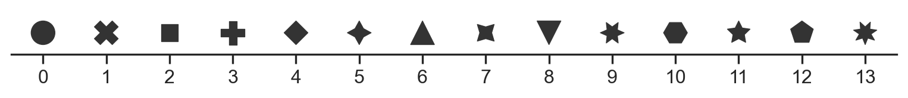

Properties of Mark objects#
Coordinate properties#
x, y, xmin, xmax, ymin, ymax#
Coordinate properties determine where a mark is drawn on a plot. Canonically, the x coordinate is the horizontal positon and the y coordinate is the vertical position. Some marks accept a span (i.e., min, max) parameterization for one or both variables. Others may accept x and y but also use a baseline parameter to show a span. The layer’s orient parameter determines how this works.
If a variable does not contain numeric data, its scale will apply a conversion so that data can be drawn on a screen. For instance, Nominal scales assign an integer index to each distinct category, and Temporal scales represent dates as the number of days from a reference “epoch”:
{kind=link}
A Continuous scale can also apply a nonlinear transform between data values and spatial positions:
{kind=link}
Color properties#
color, fillcolor, edgecolor#
All marks can be given a color, and many distinguish between the color of the mark’s “edge” and “fill”. Often, simply using color will set both, while the more-specific properties allow further control:
{kind=link}
When the color property is mapped, the default palette depends on the type of scale. Nominal scales use discrete, unordered hues, while continuous scales (including temporal ones) use a sequential gradient:
{kind=link}
Note
The default continuous scale is subject to change in future releases to improve discriminability.
Color scales are parameterized by the name of a palette, such as 'viridis', 'rocket', or 'deep'. Some palette names can include parameters, including simple gradients (e.g. 'dark:blue') or the cubehelix system (e.g. 'ch:start=.2,rot=-.4`). See the color palette tutorial for guidance on making an appropriate selection.
Continuous scales can also be parameterized by a tuple of colors that the scale should interpolate between. When using a nominal scale, it is possible to provide either the name of the palette (which will be discretely-sampled, if necessary), a list of individual color values, or a dictionary directly mapping data values to colors.
Individual colors may be specified in a wide range of formats. These include indexed references to the current color cycle ('C0'), single-letter shorthands ('b'), grayscale values ('.4'), RGB hex codes ('#4c72b0'), X11 color names ('seagreen'), and XKCD color survey names ('purpleish'):
{kind=link}
alpha, fillalpha, edgealpha#
The alpha property determines the mark’s opacity. Lowering the alpha can be helpful for representing density in the case of overplotting:
{kind=link}
Mapping the alpha property can also be useful even when marks do not overlap because it conveys a sense of importance and can be combined with a color scale to represent two variables. Moreover, colors with lower alpha appear less saturated, which can improve the appearance of larger filled marks (such as bars).
As with color, some marks define separate edgealpha and fillalpha properties for additional control.
Style properties#
fill#
The fill property is relevant to marks with a distinction between the edge and interior and determines whether the interior is visible. It is a boolean state: fill can be set only to True or False:
{kind=link}
marker#
The marker property is relevant for dot marks and some line marks. The API for specifying markers is very flexible, as detailed in the matplotlib API docs: matplotlib.markers.
Markers can be specified using a number of simple string codes:

They can also be programatically generated using a (num_sides, fill_style, angle) tuple:
{kind=link}
See the matplotlib docs for additional formats, including mathtex character codes ('$...$') and arrays of vertices.
A marker property is always mapped with a nominal scale; there is no inherent ordering to the different shapes. If no scale is provided, the plot will programmatically generate a suitably large set of unique markers:
{kind=link}
While this ensures that the shapes are technically distinct, bear in mind that — in most cases — it will be difficult to tell the markers apart if more than a handful are used in a single plot.
Note
The default marker scale is subject to change in future releases to improve discriminability.
linestyle, edgestyle#
The linestyle property is relevant to line marks, and the edgestyle propety is relevant to a number of marks with “edges. Both properties determine the “dashing” of a line in terms of on-off segments.
Dashes can be specified with a small number of shorthand codes ('-', '--', '-.', and ':') or programatically using (on, off, ...) tuples. In the tuple specification, the unit is equal to the linewidth:

Size properties#
pointsize#
The pointsize property is relevant to dot marks and to line marks that can show markers at individual data points. The units correspond to the diameter of the mark in points.
The pointsize scales with the square root of the data by default so that magnitude is represented by diameter rather than area:
{kind=link}
linewidth#
The linewidth property is relevant to line marks and determines their thickness. The value should be non-negative and has point units:
{kind=link}
edgewidth#
The edgewidth property is akin to linewidth but applies to marks with an edge/fill rather than to lines. It also has a different default range when used in a scale. The units are the same:
{kind=link}
stroke#
The stroke property is akin to edgewidth but applies when a dot mark is defined by its stroke rather than its fill. It also has a slightly different default scale range, but otherwise behaves similarly:
{kind=link}
Other properties#
group#
The group property is special in that it does not change anything about the mark’s appearance but defines additional data subsets that transforms should operate on independently.